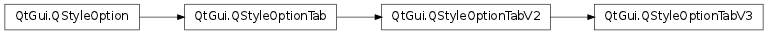

QStyleOptionTabV3 ¶

Detailed Description ¶
The PySide.QtGui.QStyleOptionTabV3 class is used to describe the parameters necessary for drawing a tabs in Qt 4.5 or above.
An instance of the PySide.QtGui.QStyleOptionTabV3 class has type SO_Tab and version 3. The type is used internally by PySide.QtGui.QStyleOption , its subclasses, and qstyleoption_cast() to determine the type of style option. In general you do not need to worry about this unless you want to create your own PySide.QtGui.QStyleOption subclass and your own styles. The version is used by PySide.QtGui.QStyleOption subclasses to implement extensions without breaking compatibility. If you use qstyleoption_cast() , you normally do not need to check it.
If you create your own PySide.QtGui.QStyle subclass, you should handle both PySide.QtGui.QStyleOptionTab , PySide.QtGui.QStyleOptionTabV2 and PySide.QtGui.QStyleOptionTabV3 . One way to achieve this is to use the PySide.QtGui.QStyleOptionTabV3 copy constructor. For example:
if isinstance ( option , QStyleOptionTabV2 ): tabV2 = QStyleOptionTabV2 ( option ) # draw the tab using tabV2In the example above: If tabOption ‘s version is 1, the extra member ( iconSize ) will be set to an invalid size for tabV2 . If tabOption ‘s version is 2, the constructor will simply copy the tab ‘s iconSize .
For an example demonstrating how style options can be used, see the Styles example.
- class PySide.QtGui. QStyleOptionTabV3 ¶
- class PySide.QtGui. QStyleOptionTabV3 ( other )
- class PySide.QtGui. QStyleOptionTabV3 ( other )
- class PySide.QtGui. QStyleOptionTabV3 ( other )
- class PySide.QtGui. QStyleOptionTabV3 ( version )
-
Parameters: - version – PySide.QtCore.int
- other – PySide.QtGui.QStyleOptionTab
Constructs a PySide.QtGui.QStyleOptionTabV3 .
Constructs a PySide.QtGui.QStyleOptionTabV3 copy of the other style option which can be either of the PySide.QtGui.QStyleOptionTabV3 , PySide.QtGui.QStyleOptionTabV2 or PySide.QtGui.QStyleOptionTab types.
If the other style option’s version is 1 or 2, the new style option’s leftButtonSize and rightButtonSize is set to an invalid value. If its version is 3, its leftButtonSize and rightButtonSize values are simply copied to the new style option.
Constructs a copy of the other style option.
Constructs a copy of the other style option.
- PySide.QtGui.QStyleOptionTabV3. StyleOptionVersion ¶
-
This enum is used to hold information about the version of the style option, and is defined for each PySide.QtGui.QStyleOption subclass.
Constant Description QStyleOptionTabV3.Version 3 The version is used by PySide.QtGui.QStyleOption subclasses to implement extensions without breaking compatibility. If you use qstyleoption_cast() , you normally do not need to check it.
See also
QStyleOptionTab.StyleOptionType
- PySide.QtGui.QStyleOptionTabV3. documentMode ¶
- PySide.QtGui.QStyleOptionTabV3. rightButtonSize ¶
- PySide.QtGui.QStyleOptionTabV3. leftButtonSize ¶